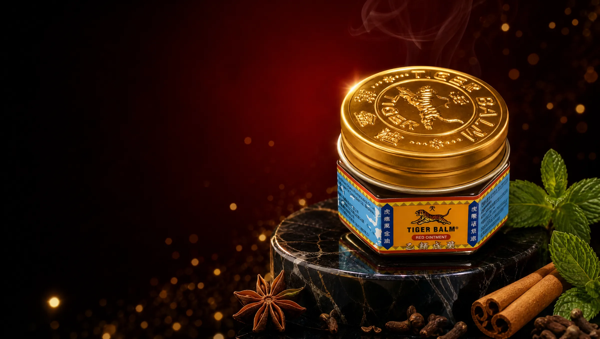
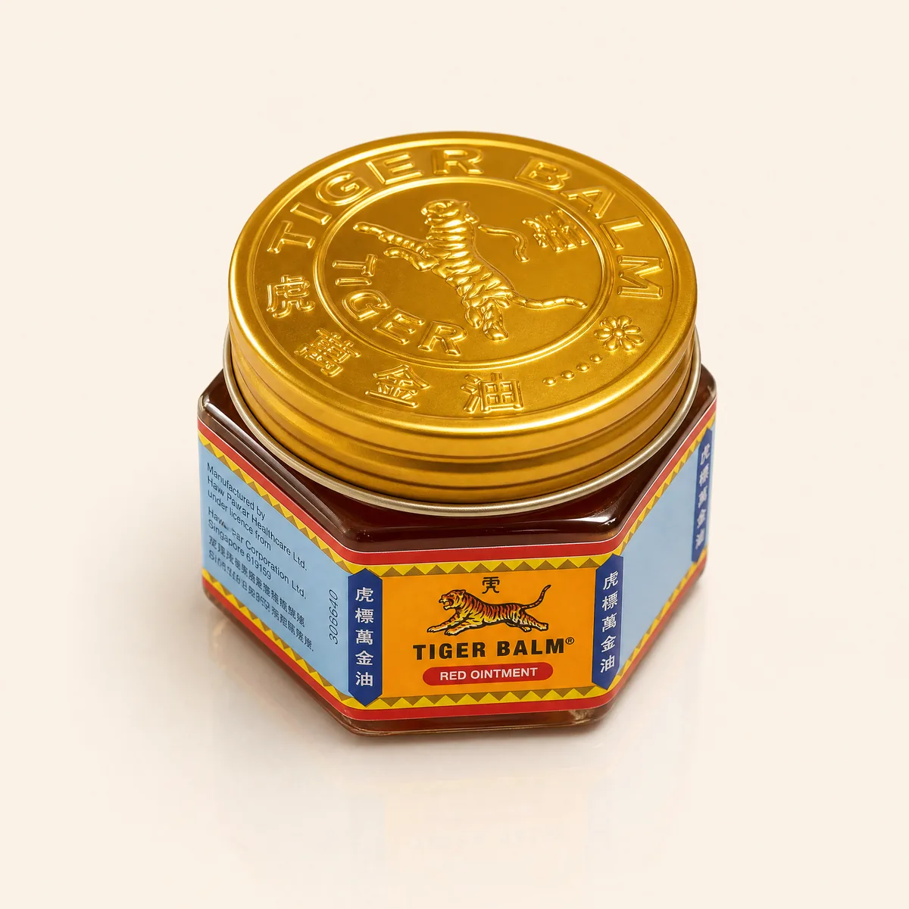
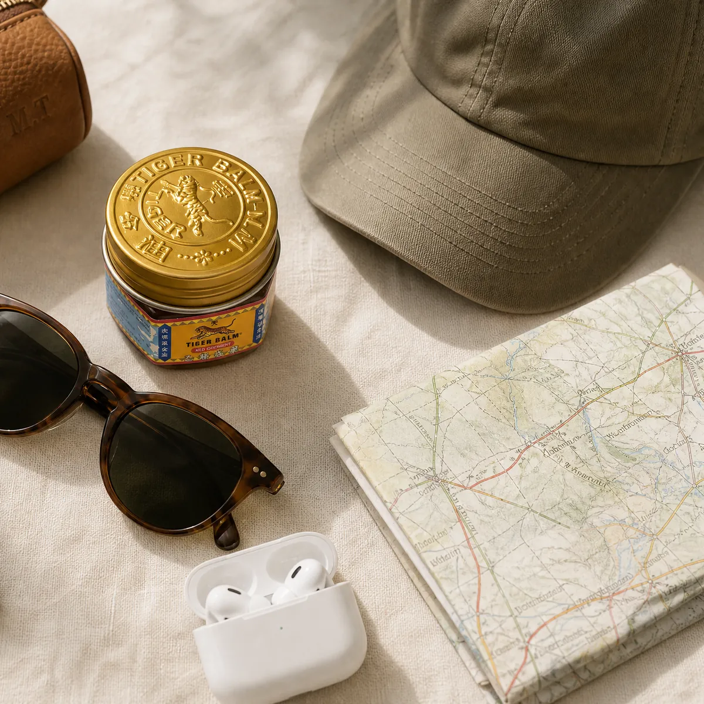

壹PROBLEM ・ 問題
每天低頭 8 小時，
身體早就在抗議
盯螢幕、滑手機、長時間通勤——頭每往前傾一點，頸部的負擔就成倍增加。研究指出，低頭 60 度時，頸椎承受的重量可達約 27 公斤，相當於扛著一個小學生在工作。
- 下午三點，肩膀像被灌了水泥，轉個頭都卡卡的
- 太陽穴隱隱發脹，專注力一路往下掉
- 運動完隔天，腿痠到上下樓梯都要扶著
- 夏夜被蚊子一咬，癢得翻來覆去睡不著

百年經典 · SINCE 1870s
從仰光的草藥鋪，到全球逾百個國家的家庭藥箱——那只金色虎紋瓶蓋，裝的是幾代人共同的安心。樟腦、薄荷腦與四種草本精油，先涼後暖，舒緩肩頸痠痛、頭痛與蚊蟲叮咬之癢痛。
PROBLEM · AGITATE · SOLUTION
壹PROBLEM ・ 問題
盯螢幕、滑手機、長時間通勤——頭每往前傾一點，頸部的負擔就成倍增加。研究指出，低頭 60 度時，頸椎承受的重量可達約 27 公斤，相當於扛著一個小學生在工作。
貳AGITATE ・ 惡化
放著不管的緊繃，會讓你不自覺地聳肩、駝背，姿勢越來越差；晚上睡不好，隔天更疲憊，形成甩不掉的惡性循環。更讓人沮喪的，是那些你早就試過的方法——
貼一整天又悶又癢，撕下來還殘膠、拉扯皮膚；關節一彎就翹起來。
瓶口沒鎖緊就在包包裡滲漏，倒多倒少很難控制，一不小心流進眼角。
一次動輒上千元，舒服兩天又打回原形，而且沒辦法天天去。
你需要的不是更貴的方案，
而是一個「隨時伸手就拿得到」的方法。
參SOLUTION ・ 解方
虎標萬金油紅色軟膏，以樟腦、薄荷腦搭配白樹油、薄荷油、丁香油與肉桂油的經典配方。只需取米粒大小，在不適部位輕輕按揉，清涼感先行、溫熱感隨後擴散，幫助舒緩肌肉痠痛、頭痛與蚊蟲叮咬之癢痛。
選購虎標萬金油樟腦與薄荷腦帶來清涼，肉桂油的溫熱隨後漫開，這是紅色版的經典「有感」配方。
濃稠軟膏不滴不流，一指沾取剛剛好，太陽穴、後頸、手腕都好擦。
金屬旋蓋密封，放包包、辦公桌、車上或行李箱，需要時隨手可得。
1870 年代誕生於仰光，如今行銷全球逾百個國家與地區，是許多家庭的常備品。

人氣經典百年經典配方，先涼後暖的溫熱感，舒緩肩頸痠痛、頭痛與蚊蟲叮咬之癢痛。金屬旋蓋、不滴不漏，是辦公室、居家與旅行的常備良伴。
每罐 NT$169
再買 NT$430 即享免運
樟腦（Camphor）、薄荷腦（Menthol）、白樹油（Cajuput Oil）、薄荷油（Mint Oil）、丁香油（Clove Oil）、肉桂油（Cassia Oil），以石蠟類基劑調和。＊實際成分與含量以外盒標示為準。
取適量（約米粒大小）塗抹於不適部位，以指腹輕輕畫圓按揉至吸收；請依外盒說明之次數使用。用後請洗手，避免揉眼。
本品僅供外用。請避免接觸眼睛、口腔等黏膜及傷口；兩歲以下幼兒、孕婦及哺乳期婦女使用前請先諮詢醫師或藥師。若使用後出現紅腫、刺痛等不適，請立即停用並就醫。請置於兒童不易取得之處，存放於陰涼乾燥處，避免陽光直射。
SIX CLASSIC INGREDIENTS
紅色版加入肉桂油，溫熱感更鮮明——這正是許多老顧客「只認紅色」的原因。
清涼之後帶出溫熱，萬金油「有感」的核心來源。
瞬間清涼舒爽，草本氣息幫助轉換心情。
萃取自東南亞白千層，帶有清透的木質草本香。
清新明亮的香氣，讓使用感受更加柔和。
溫潤辛香的東方調性，賦予經典的深沉尾韻。
紅色版的靈魂，帶來更明顯、更持久的溫熱感。
＊成分依實際包裝標示為準。本品為乙類成藥，請依說明使用。
EVERYDAY RITUALS

午休時在後頸、肩膀抹一點，畫圓按揉一分鐘，讓緊繃慢慢鬆開。
洗完澡肌膚溫熱時塗抹按摩，舒緩訓練後的小腿、大腿與肩背痠痛。
少量擦在太陽穴與後頸（避開眼周），清涼草本香氣幫你找回專注。
露營、登山、出國旅遊被叮咬時點一點，緩解惱人的癢痛感。
THE HERITAGE
中醫師胡子欽在仰光調配出萬金油的原型配方，以草本溫暖鄰里。
胡文虎、胡文豹兄弟以「虎標」為名推廣，事業移至新加坡，金色虎紋瓶蓋從此成為經典。
行銷全球逾百個國家與地區，仍是無數家庭藥箱裡最熟悉的那一罐。
CUSTOMER REVIEWS
行銷企劃・台北
「每天盯電腦十小時，下午肩膀硬得像石頭。午休在後頸擦一點揉開，熱熱的很舒服，現在辦公桌、包包各放一罐。」
軟體工程師・新竹
「加班到太陽穴發脹時，擦一點點在太陽穴旁和後頸，涼涼的味道讓我比較能撐過最後一小時。真的只要一點點就夠。」
露營愛好者・台中
「去露營被蚊子叮了好幾包，擦上去涼涼的，癢感很快就緩下來。現在它是我露營清單上的固定班底。」
健身教練・高雄
「重訓腿日隔天，洗完澡在大腿和小腿擦一點按摩，溫熱感很持久。紅色比白色更熱，我自己偏好紅色。」
退休教師・台南
「從小家裡就有這罐金蓋子，媽媽總放在電視櫃上。現在換我買 6 入組分給孩子們，一打開就是熟悉的味道。」
業務經理・桃園
「出差常搭高鐵和飛機，金屬蓋轉緊完全不會漏，放西裝口袋也沒問題，是行李箱裡最小但最常用到的東西。」
平面設計師・台北
「一開始擔心味道太重，結果揉開幾分鐘就淡了，同事也沒說什麼。罐子比想像中小，但很耐用，一罐用了好幾個月。」
研究生・台北
「寫論文熬夜時擦一點在後頸，清涼的香氣讓腦袋清醒一點。比咖啡溫和，也不會影響睡眠。」
登山嚮導・花蓮
「爬完百岳下山，膝蓋周圍和小腿擦一點按摩很舒服。膏狀不會像油一樣在背包裡漏得到處都是，這點真的大加分。」
這個分類目前沒有評價。
SIDE BY SIDE
我們把常見的四種痠痛舒緩方式放在一起，用最實際的日常需求來比。
| 比較項目 | 最推薦虎標萬金油（紅） | 液態薄荷油 | 痠痛貼布 | 一般無名薄荷膏 |
|---|---|---|---|---|
| 劑型 | 濃稠軟膏 | 液體 | 布面貼片 | 軟膏 |
| 攜帶・防漏 | ●金屬旋蓋，不滴不漏 | ◐需留意瓶口滲漏 | ●輕薄好收 | ◐多為塑膠蓋 |
| 用量控制 | ●米粒大小精準取用 | ◐容易倒太多 | ○尺寸固定 | ●可自行取量 |
| 部位彈性 | ●太陽穴、肩頸、手腳皆可 | ●多數部位可用 | ◐關節彎曲處易翹起 | ●多數部位可用 |
| 悶熱・殘膠 | ●無覆蓋悶熱感 | ●無 | ○長時間貼覆易悶、殘膠 | ●無 |
| 每次使用成本 | ●一罐可用數十次以上 | ●低 | ◐每片僅能用一次 | ●低 |
| 藥品許可 | ●乙類成藥，具許可證字號 | ◐依產品而異 | ◐依產品而異 | ◐請確認標示 |
| 品牌歷史 | ●百年品牌，全球逾百國 | ◐依品牌而異 | ◐依品牌而異 | ○來源資訊較少 |
| 綜合推薦 |
●表現佳 ◐視情況 ○較不理想 ｜ ＊比較依一般產品類型特性整理，個別產品表現可能不同。
FAQ
我們把顧客最常問的顧慮整理出來，一次說清楚。
沒問題了，我要選購秘訣在「少量」。每次只需取米粒大小，揉開後草本香氣會在幾分鐘內明顯轉淡，比多數人想像的低調許多。若仍在意，可擦在後頸、肩胛等衣物覆蓋處，或選在午休、下班後與睡前使用。很多上班族的做法是辦公桌放一罐、包包放一罐——需要時一抹即用，不必硬撐到下班。
先涼後暖的感受，來自樟腦與薄荷腦作用於皮膚的感覺，正是萬金油被喜愛的「有感」來源。虎標萬金油為乙類成藥，成分與用法皆有明確規範。初次使用建議先在手腕內側少量試擦；請避免接觸眼睛、黏膜與破損皮膚；兩歲以下幼兒、孕婦及哺乳期婦女請先諮詢醫師或藥師。若出現持續刺痛或紅腫，請立即停用。
來路不明的低價品，你無法確認它的保存方式與有效期限——而這正是藥品最不該冒險的地方。本店販售之虎標萬金油皆為台灣公司貨，外盒具中文標示、藥品許可證字號與有效期限，可至衛福部食藥署許可證查詢系統比對。收到商品若有任何疑慮，聯繫客服即可協助處理，讓你安心買、放心擦。
TAKE IT HOME TODAY
今天下單，那只金蓋很快就在你手邊。選 3 入組：辦公桌、包包、家裡各放一罐，痠痛來襲時，永遠不必找。